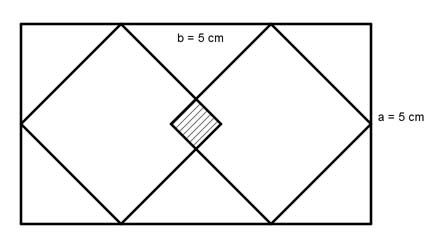
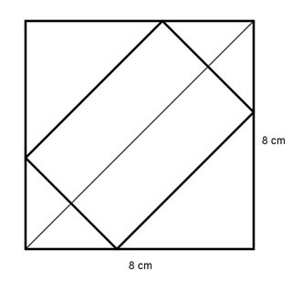
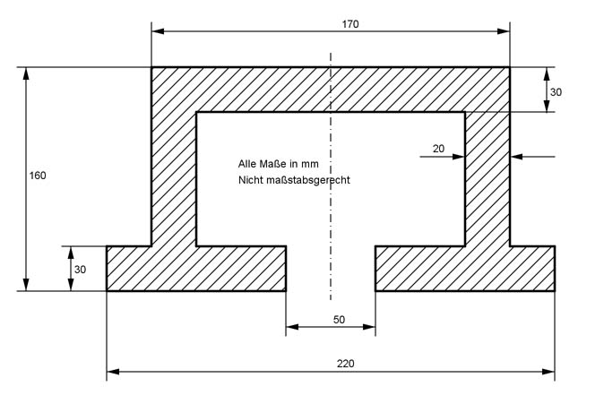
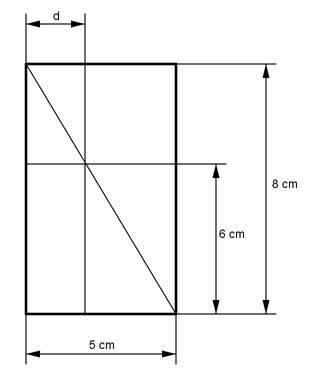
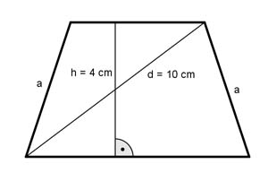
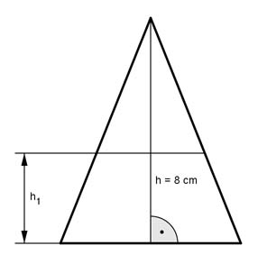
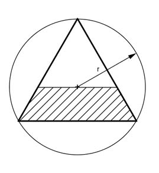
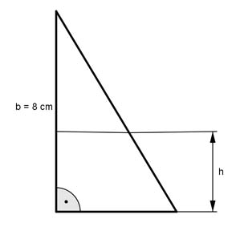
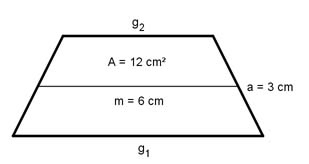
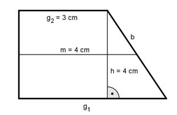

Aufgabe 68
Berechnen Sie die Fläche des Vierecks, sowie die Länge
der Seiten a und b.
 b = cm
b = cm
Wie löse ich Matheaufgaben?
Flächenberechnungen
Aufgabe 68 Berechnen Sie die Fläche des Vierecks, sowie die Länge der Seiten a und b.
Aufgabe 69 Die Diagonale eines Rechtecks hat eine Länge von 8 cm. Die Seite a ist 3 cm lang. Wie groß sind die Fläche A und die Seite b?
Aufgabe 70 Ein Rechteck hat eine Fläche von 8 cm² und die Seite a von 2 cm. Wie groß sind die Diagonale d und die Seite b? b = cm
Aufgabe 71 Die Seiten eines Rechtecks verhalten sich wie 2 : 3. Das Rechteck hat die gleiche Fläche wie ein Quadrat mit der Seitenlänge 4 cm. Wie groß sind die Seiten a und b und die Diagonale d des Rechtecks?
Aufgabe 72 Ein Rechteck hat die gleiche Fläche wie ein Quadrat mit der Seitenlänge 4 cm. Die Diagonalen von Rechteck und Quadrat verhalten sich wie 3 : 2. Wie groß sind die Seiten des Rechtecks? Größere = cm
Aufgabe 73 Ein Parallelogramm hat eine Fläche von 12 cm², eine Seite von 4 cm und eine von 8 cm. Wie groß sind die Höhe und die längere Diagonale?
Aufgabe 74 Wie groß ist die Seite eines Quadrates, das so groß ist wie ein Rechteck mit den Seitenlängen 3 cm und 5 cm? Sie ist cm groß.
Aufgabe 75 Wie groß ist die Fläche des eingeschlossenen Quadrates und die Länge seiner Diagonale? 
Aufgabe 76 Berechnen Sie die Länge der Seiten des einbeschriebenen Rechtecks. Die Flächen des Quadrates und des Rechtecks verhalten sich wie 3 : 1.  Längere Seite = cm
Aufgabe 77 Die Diagonalen einer Raute sind 4 cm und 6 cm lang. Wie groß sind ihre Fläche A und die Länge a einer Seite?
Aufgabe 78 Wie groß ist die Höhe h einer Raute, wenn ihre Seiten 8 cm lang sind und eine Diagonale 3 cm? h = cm
Aufgabe 79 Wie groß ist die Höhe h einer Raute, wenn ihre Fläche 16 cm² beträgt und ihre Seiten 6 cm?
Aufgabe 80 Die Diagonalen eines rechteckigen Platzes sind 43 m lang und schließen Winkel von 60° bzw. 120° ein. Wie lang sind die Rechteckseiten? Längere Seite = m.
Aufgabe 81 Wie groß ist die Fläche A des Profilstahls? 
Aufgabe 82 Aus einem Baumstamm soll ein rechteckiges Kantholz mit den Maßen 5 cm und 12 cm hergestellt werden. Welchen Durchmesser d muss der Stamm haben? d = cm
Aufgabe 83 Wie groß ist der Inkreisradius einer Raute, deren Diagonalen 52 mm und 88 mm lang sind?
Aufgabe 84 Wie groß sind b, d, l, u und v?
l = cm
Aufgabe 85 Die Basis eines gleichschenkligen Dreiecks ist 6 cm, ein Schenkel 8 cm lang. Wie groß ist seine Fläche A, wenn ein 1 cm breiter Streifen parallel zu einem Schenkel abgeschnitten wird?
Aufgabe 86 Wie lang ist d?  d = cm
Aufgabe 87 Wie groß ist die Fläche A des Trapezes? 
Aufgabe 88 Wie groß muss man h₁ machen, damit das gleichschenklige Dreieck halbiert wird?  h1 = cm
Aufgabe 89 Wie groß ist die Fläche A des schraffierten gleichschenkligen Trapezes, das in einem gleichseitigen Dreieck mit dem Umkreisradius r = 6 cm liegt? 
Aufgabe 90 Wie groß muss h sein, wenn sich die Fläche des Trapezes zur Fläche des darüberliegenden Dreiecks wie 3 : 2 verhält?  h = cm
Aufgabe 91 Wie groß sind g1 und g2 von dem gleichschenkligen Trapez? 
Aufgabe 92 Berechnen Sie die Höhe h, die Diagonale d und die Seite a des gleichschenkligen Trapezes.
d = cm
Aufgabe 93 Ein Trapez mit einer Mittellinie von 6 cm und einer Höhe von 4 cm soll einem gleichseitigen Dreieck flächengleich sein. Berechnen Sie die Länge a einer Dreieckseite und das Verhältnis der beiden Höhen.
Aufgabe 94 Berechnen Sie die Länge der Grundseite g₁ und der Seite b.  b = cm
Aufgabe 95 Ein gleichschenkliges Dreieck ist 12 cm hoch. Es soll durch parallel verlaufende Teilstriche in 3 gleich große Flächen unterteilt werden. In welchen Höhen verlaufen die Teilstriche?
Aufgabe 96 Ein Rechteck ist 4 cm breit und 13 cm lang. Es soll so zerteilt werden, dass zwei Trapeze entstehen, deren Grundseiten 4 cm und 9 cm lang sind. Wie lang ist die Schnittlinie l? l = cm
Aufgabe 97 Von einem gleichschenkligen Trapez sei die eine parallele Seite zweimal und die andere dreimal so groß wie der Schenkel mit 3 cm. Wie groß sind der Umfang U und die Fläche A des Trapezes?